Controlled root pruning interface
Design the pause
before the branch.
The side wall stops circling. The bottom decides whether roots accumulate, dry abruptly, or reorganise into a denser lateral system.
- 01Geometrydirects the flow
- 02Typarcontrols the pause
- 03Climatesets the intensity
The biological sequence
One interface.
Five controlled moments.
The animation follows the complete cycle: approach, contact, moisture-buffered pause, local micro-drying and apex pruning. Lateral roots appear only after the tip is arrested at Typar.
- 01Root approachesThe apex grows toward the membrane.
- 02Typar contactMoisture softens the transition.
- 03Venturi dryingFocused airflow renews the boundary layer.
- 04Apex pruningThe active tip is arrested at the interface.
- 05Lateral responseBranching redistributes the root system.

Root approach
Comparative tuning model
Tune the delay.
Keep the architecture.
Geometry creates the pathway. Typar and climate change how long the root remains in the contact zone before local drying triggers branching.
D1 Centresoft adaptation
D2 Transitionbalanced response
D3 Peripherydecisive pruning
Controlled delay
114min
balanced adaptation
Drying index101
Branching response75%
SF20 and natural airflow create a measured drying window for continental conditions.